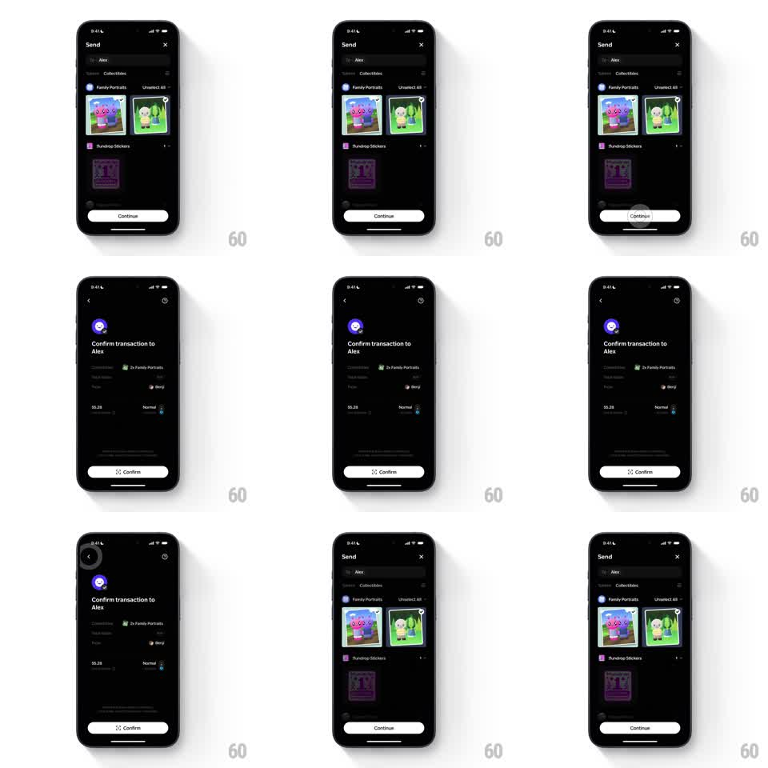

Media
Frame-by-frame

Rebuild this interaction 1:1: Family's send-collectibles transition - on the dark Send screen with two Family Portraits selected, tapping Continue scales the Send screen down into the background as the "Confirm transaction to Alex" screen slides over it; going back scales the Send screen back up.

Rebuild this interaction 1:1: Family's send-collectibles transition - on the dark Send screen with two Family Portraits selected, tapping Continue scales the Send screen down into the background as the "Confirm transaction to Alex" screen slides over it; going back scales the Send screen back up. ## Integration Integration: stack-agnostic spec - springs given as stiffness/damping, timed motions as duration + curve; map every value to your framework and animation library of choice. ## Scene Dark Send screen: "To: Alex" row, Collectibles tab, "Family Portraits" with two checked NFT cards (blue, green), "Fundrop Stickers" below, white "Continue" pill. Confirm screen: "Confirm transaction to Alex" with a spinner-then-check header glyph, detail rows (Collectibles: 2x Family Portraits, To: Alex, From: Benji, fee "$5.28", "Normal"), white "Confirm" pill. ## Motion spec Pattern: parent scale-down with child slide-over. - Tap Continue: the Send screen scales down (1 -> 0.9, 300ms ease-out) and dims (brightness 0.6), corner radius appearing on its edges, as the Confirm screen slides up over it (spring ~300/20). - The header glyph spins (loading ring, 600ms) then resolves to a check (scale pop, spring ~340/14) while the detail rows stagger in (50ms apart, translateY 10pt -> 0). - The selected portraits' thumbnails miniaturize into the "2x Family Portraits" row (shared-element shrink, 300ms). - Back gesture/tap: the Confirm screen slides down (250ms) and the Send screen scales back up to full (300ms), selections intact. ## Calibration - The scaled-down parent stays alive at the edges - a visible stack, not a black void. - The white pill style is identical on both screens, bottom-aligned. ## Reduced motion Screens crossfade (250ms) without scaling. ## Don't miss - The fee row arrives last and is right-aligned, clearly secondary. - The two checked portraits keep their checkmarks when the flow returns.